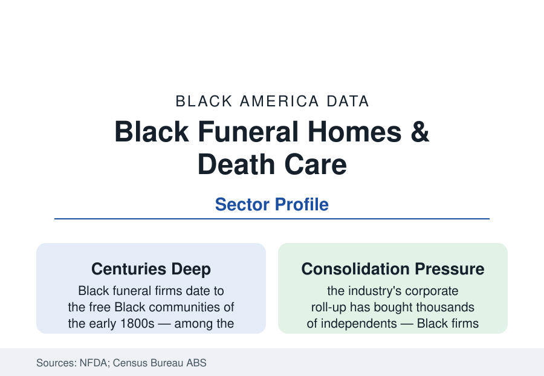

Black Business
Black Funeral Homes: The Anchor Institution of the Business District
The Black funeral home is among the oldest continuously operating Black business forms in America — and among the most durable in the data. The industry profile.

If one business form runs unbroken through every era of this reference, it is the funeral home. Black undertakers served the free communities of the early republic, buried the Great Migration, financed the movement (the funeral home's cars and cash were civil-rights infrastructure), and anchor hundreds of Black business districts today — an industry built on the one demand that never cycles. This article reports the death-care data.
The Industry's Structure and the Black Share
The American funeral industry counts roughly 19,000 establishments in the NFDA's data, predominantly small and family-owned (the median firm handles a few hundred calls a year), with the corporate consolidator Service Corporation International holding the largest share (roughly a tenth-plus of the market's revenue through its Dignity Memorial network) and regional roll-ups behind it. Black-owned funeral homes number in the low thousands by the trade associations' estimates — a share of establishments several times the Black share of business ownership generally, concentrated in the South and the legacy cities in the map of every other profile here. The sector's economics are distinctive in the business data: demand is demographically driven and recession-resistant (the death rate is the most predictable series in this reference), revenue per call runs in the mid-thousands for burial services in the NFDA's cost surveys, pre-need (prepaid funeral insurance and trusts) supplies the industry's financial engine — the funeral home as, in part, an insurance intermediary — and cremation's rise (now the majority choice nationally in the NFDA data, at lower revenue per call) is the industry's great margin transition, playing out at different speeds in Black communities where burial tradition and church practice hold cremation's share below the national curve in the regional data.
The Historical Capital: Why Funeral Homes Anchored Everything
The sector's centrality to Black business history is a matter of structure, documented across the literature: undertaking required modest capital and a license but returned steady cash; the burial societies and insurance linkages (the funeral home and the Black insurer grew up as siblings — the Richmond and Durham files both start here) compounded it; the funeral director became, in town after town, the wealthiest Black citizen and the community's banker, bondsman, and ambulance service (funeral homes ran the ambulance in much of the South into the modern era — the hearse's second shift in the historical record); and the independence of the income — white customers were not required — made the funeral director the movement's freest financier. The data's descendants of that structure persist: the National Funeral Directors and Morticians Association (the Black trade body, founded in the Jim Crow exclusion era) counts the profession's Black firms; the mortuary-science pipeline (a small set of accredited programs, several at HBCUs and in Black-serving institutions) graduates the next licensed generation; and the family-succession data (second, third, fourth generations in the trade press's profiles) give the sector the ownership longevity records of the business section.
The Modern Pressures: Consolidation, Cremation, and Cost
The current file has three pressures. Consolidation: the roll-ups' acquisition programs have bought thousands of independents at multiples the family data make tempting, and Black firms weigh the offer against the community's specific stake — the acquired home's name usually stays on the sign (the industry's local-brand model) while the pricing and pre-need economics change underneath, a transaction the consumer advocates track closely. Cremation's economics: the direct-cremation price competition (including online entrants) compresses the service revenue the traditional home depends on, answered by the memorial-service and celebration-of-life product lines the trade data show growing. And the consumer-regulation file: the FTC's Funeral Rule (price disclosure, the General Price List) and the state boards' licensing — the profession's compliance layer, with the preneed trust scandals of the industry press the standing cautionary file. The green-burial and home-funeral movements add a small, growing alternative tier in the consumer data.
The New Generation and the Adjacent Businesses
The sector's refresh is visible in the trade data: younger Black funeral directors (disproportionately women in the mortuary programs' recent classes — the profession's gender composition is shifting in the enrollment data) modernizing the form — livestreamed services normalized by the pandemic era, personalization and event production, social-media marketing of a business that once relied on the church bulletin — and the adjacent holdings multiplying around the anchor: cemeteries and crematories (vertical ownership), limousine and transport services, monument companies, the funeral home's real estate itself. The homegoing tradition — the Black funeral as the culture's signature ceremony, with its own music, preaching, and repast economy (the caterers and florists of the local business file) — is the demand foundation the industry data rest on: a community that buries its dead with maximal ceremony sustains the firms that stage it.
Reading the Funeral Data
The funeral home is the business section's bedrock: the steadiest demand, the longest tenures, the deepest community entanglement of any form in the data. Its numbers are modest beside the technology file's and its meaning is larger — the institution that held the community's money, dignity, and dead through every era the census counted is still standing on the same corners, now with the consolidator's offer on the desk. What it decides is a business story and a civic one in the same signature.
More in Black Business
Black-Owned Businesses: Counts, Receipts, and the Representation Gap
About 161,000 Black-owned employer firms and three million solo ventures: how the Census Bureau counts Black business ownership, where firms concentrate, and the gap between population share and business share.
Black Median Net Worth: The Wealth Gap in Federal Reserve Data
The Federal Reserve puts Black median family net worth at $44,900, against $285,000 for White families — about 16 cents on the dollar. The widest gap in economic data.
Black Buying Power: The $1.8 Trillion Consumer Economy
Black buying power is estimated at about $1.8 trillion — larger than the economy of most nations. What the figure measures, who produces it, and what it buys.
Source: National Funeral Directors Association industry data; U.S. Census Bureau Annual Business Survey (death care sector); Federal Trade Commission Funeral Rule records; industry and academic research.